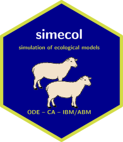
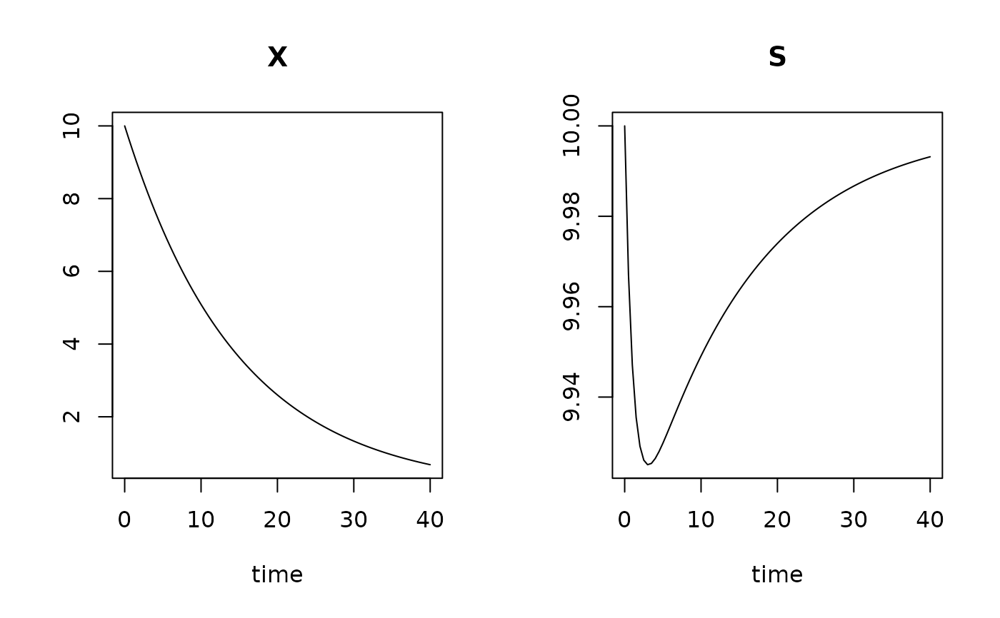

Chemostat Model
chemostat.Rdsimecol example: Model of continuos culture of microorganisms (chemostat).
Usage
data(chemostat)Format
An S4 object according to the odeModel specification.
The object contains the following slots:
mainthe differential equations for substrate (
S) and cells (X).parmsa vector with the named parameters of the model:
vmmaximum growth rate of the cells,
kmhalf saturation constant,
Yyield coefficient (conversion factor of substrate into cells).
Ddilution rate,
S0substrate concentration in the inflow.
timessimulation time and integration interval.
initvector with start values for substrate (
S) and cells (X).
To see all details, please have a look into the implementation below.
See also
simecol-package,
sim,
parms,
init,
times.
Examples
##============================================
## Basic Usage:
## work with the example
##============================================
data(chemostat)
plot(sim(chemostat))

parms(chemostat)["D"] <- 0.9
plot(sim(chemostat))
##============================================
## Implementation:
## The code of the chemostat model
##============================================
chemostat <- new("odeModel",
main = function(time, init, parms, inputs = NULL) {
with(as.list(c(init, parms)), {
mu <- vm * S/(km + S) # Monod equation
dx1 <- mu * X - D * X # cells, e.g. algae
dx2 <- D *(S0 - S) - 1/Y * mu * X # substrate, e.g. phosphorus
list(c(dx1, dx2))
})
},
parms = c(
vm = 1.0, # max growth rate, 1/d
km = 2.0, # half saturation constant, mumol / L
Y = 100, # cells /mumol Substrate
D = 0.5, # dilution rate, 1/d
S0 = 10 # substrate in inflow, mumol / L
),
times = c(from=0, to=40, by=.5),
init = c(X=10, S=10), # cells / L; Substrate umol / L
solver = "lsoda"
)